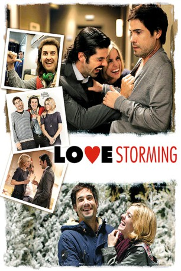
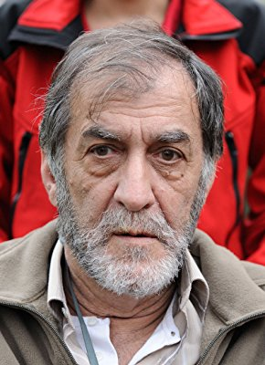

#9166 Love Storming
 
 IMDB-Wertung: 6.0 / 10
IMDB-Wertung: 6.0 / 10  Metascore: 0
Metascore: 0 
Sergio und Bea sehen in ihrer Beziehung keine Zukunft mehr. Jedenfalls haben sie sich auf folgendes geeinigt: Sergio wird nach Madrid zurück kehren, Bea nach Deutschland fliegen, wo ihre Eltern ein Restaurant haben. Auf dem Flughafen von Bilbao in der Silvesternacht trennen sich ihre Wege. Bzw., hätten sich fast getrennt, wenn nicht der Schneesturm aufgezogen wäre. Nun sitzen alle im Hotel, schlagen die Zeit mit Partys tot, und irgendein Komiker, der sich für Sergios Freund hält, lässt nichts unversucht, um Bea und Sergio wieder zusammen zu bringen.
Jahr: 2010
Dauer: 99 Minuten
FSK: 6
Land: Spanien Studio: Schröder MediaTonspuren:
Untertitel:
Auflösung: 1080p (1920x1080) Größe: 6717 MB
Genre: Komödie, Liebe
Regisseur: Borja Cobeaga
Drehbuch: Borja Cobeaga
Soundtrack: Aránzazu Calleja
Darsteller:
- Unax Ugalde als Sergio
- Alexandra Jiménez als Bea
- Julián López als Juancarlitros
- Miguel Ángel Muñoz als Ernesto
- Secun de la Rosa als Juanan
-  Ramón Barea als Padre
- Bárbara Santa-Cruz als Presentadora de las campanadas
- Elvira Cuadrupani als Azafata
- Mariam Hernández als Laura
- Mariví Bilbao als Abuela
- Alfredo Silva als Jimmy
- Mauro Muñiz als Piloto
- Nati Ortíz de Zárate als Pasajera
- Ernesto Sevilla als Presentador de las campanadas
- Ana Cobeaga als Recepcionista del hotel
- Borja Pérez als Fernan
- Joseba Caballero als Perianes
- Tomás Cimadevilla als Camarero hotel
- Koldo Losada als Vendedor
- Saioa Fernández als Azafata
- Javi Alaiza als
Datei: X:\2010(G-M)\Love Storming (2010, FSK6, 1920x1080).mkv seit 19.07.2018
Festplatte: HD 2010(G-Z)-2011(A-F)
 Es gibt insgesamt 85 Filme in der Gruppe '2010(G-M)'
Es gibt insgesamt 85 Filme in der Gruppe '2010(G-M)'